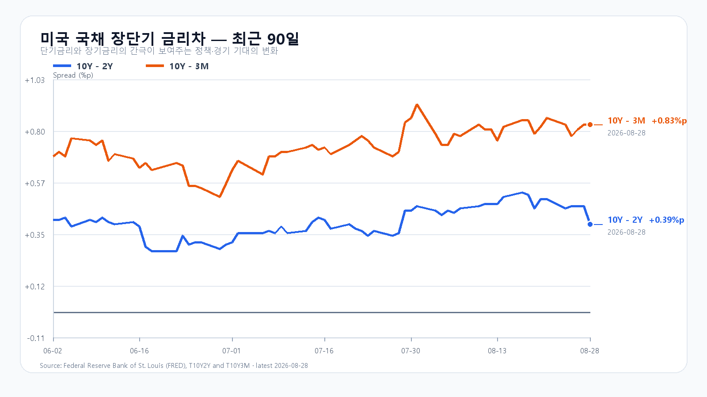

오늘의 한 문장
유가·금리·반도체가 한꺼번에 위험 회피를 가리킵니다. KOSPI 6,600은 외국인 매도가 줄고 두 메모리 대형주가 장전 낙폭을 회복할 때 지킬 수 있습니다.
전날 급락은 기준점이고, 새 변수는 그 뒤에 왔다
KOSPI는 8월 28일 6,846.54로 출발해 6,780.13~6,901.78을 오간 뒤 6,788.88로 마감했습니다. KODEX 레버리지는 3.64% 내린 106,370원이었습니다. 외국인 현물 -1조6,573억원, 비차익 프로그램 -1조5,398억원으로 매도 압력이 컸습니다.
전날 국내 하락을 오늘 충격으로 다시 더할 필요는 없습니다. 다만 한국장 마감 뒤 미국 반도체가 밀렸고, 일요일에는 호르무즈 해협의 군사 충돌까지 재개됐습니다. 오늘 시초가는 이 두 변수를 새로 소화합니다.
| 항목 | 확정값 | 오늘 기준 |
|---|---|---|
| KOSPI | 6,788.88(-1.79%) | 6,600 방어 · 6,800 회복 |
| KODEX 레버리지 | 106,370원(-3.64%) | 102,000원 방어 · 106,000원 회복 |
| 외국인·비차익 | -1조6,573억 · -1조5,398억원 | 매도 규모 축소 여부 |
| 삼성전자·SK하이닉스 NXT | 250,500원(-2.53%) · 1,612,000원(-2.48%) | 장전 낙폭 회복 여부 |
호르무즈 충돌이 유가와 물가 경로를 다시 흔든다
미국은 일요일 이란 라라크섬의 로켓 발사대를 타격했습니다. 이란이 보복을 예고하면서 전 세계 원유의 약 20%가 지나는 호르무즈 해협의 운송 차질 위험이 다시 커졌습니다. 월요일 아시아 개장 초 브렌트유는 배럴당 89달러 후반으로 약 2% 올랐고 장중 90달러를 넘었습니다.
유가 상승은 수입물가와 기업 비용을 함께 밀어 올립니다. 원화가 크게 약해지지 않더라도 에너지 비용이 오르면 항공·운송·화학처럼 연료와 원재료 비중이 큰 업종의 부담이 먼저 커집니다. 반대로 조선·방산·정유는 지수와 다른 흐름을 보일 수 있습니다.
물가를 먼저 보겠다는 연준, 금요일 반도체는 밀렸다
Warsh 의장은 잭슨홀 연설에서 12개월 PCE 물가 3.7%, 6개월 환산 4.1%를 짚으며 물가 안정에 초점을 맞췄습니다. 경기와 노동시장은 견조하다고 평가했습니다. 미국 국채는 3개월물 3.90%, 2년물 4.34%, 10년물 4.73%, 30년물 5.22%였습니다.
금요일 미국 정규장에서 QQQ는 0.65%, SOXX는 3.20%, SMH는 3.47% 내렸습니다. Nvidia -4.58%, AMD -2.33%, Marvell -10.28%였습니다. 유가 상승이 물가 기대를 자극하고 장기금리가 높게 머물면, 먼 미래 이익을 먼저 반영한 반도체의 할인율 부담이 커집니다.
TrendForce의 8월 28일 공개치에서 DDR5 16Gb는 보합, DDR4 16Gb는 0.27%, DDR4 8Gb는 0.40% 올랐습니다. 레거시 DDR 가격은 실적 하단을 받치지만 구매자 관망이 이어져 오늘 위험 회피를 단독으로 뒤집을 신호는 아닙니다.

오늘의 시나리오
KOSPI 6,600~6,800
8월 28일 급락 뒤 6,600 부근 매수와 6,800 회복 시도가 맞섭니다. 브렌트유 90달러, 높은 장기금리, 미국 반도체 약세가 상단을 막습니다.
KOSPI 6,300~6,600
브렌트유가 90달러 위에 머물고 외국인·프로그램 매도가 이어집니다. 반도체 NXT 약세가 정규장으로 번지면 6,500과 6,300을 차례로 봅니다.
KOSPI 6,800~7,000
브렌트유가 89달러 아래로 밀리고 두 메모리 대형주가 장전 낙폭을 되돌립니다. 외국인 현물이 순매수로 돌아서야 6,800 위에 안착할 수 있습니다.
2차 지지 99,000원 · 1차 지지 102,000원 · 반등 기준 106,000원 · 저항 110,500원.
전체 장중 경로는 KOSPI 6,250~7,050으로 봅니다. 오늘 대응 점수는 공격 10 · 관망 45 · 방어 45입니다.
이번 주 첫 확인값은 ISM과 JOLTS다
9월 1일 오후 11시에는 미국 ISM 제조업지수와 7월 JOLTS가 함께 나옵니다. 9월 4일 오후 9시 30분에는 미국 8월 고용보고서가 발표됩니다. 유가 상승 뒤 물가와 고용의 조합이 연준의 금리 경로를 다시 정합니다.
장중에는 브렌트유 90달러, KOSPI 6,600, KODEX 레버리지 106,000원, 외국인 현물과 비차익 프로그램의 매도 규모, 삼성전자·SK하이닉스의 장전 낙폭 회복을 확인해야 합니다.